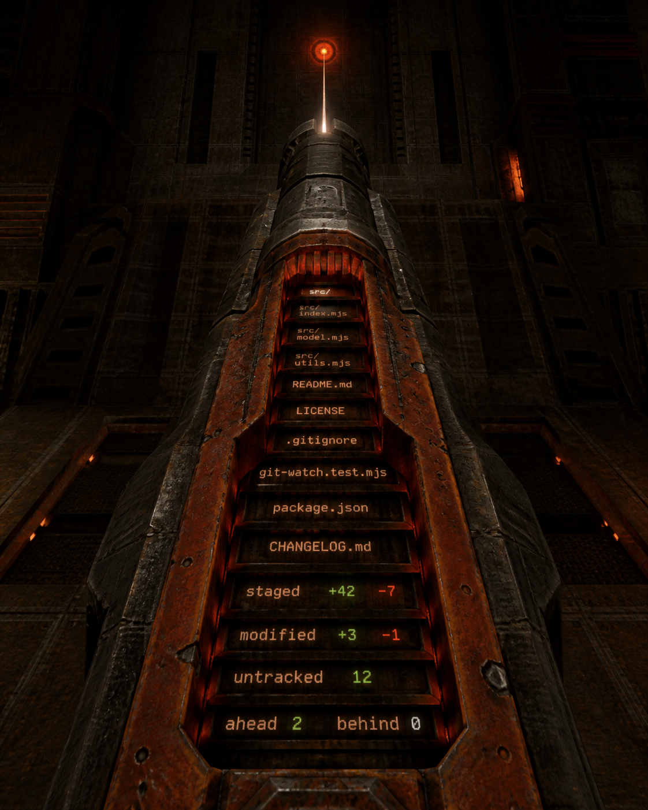
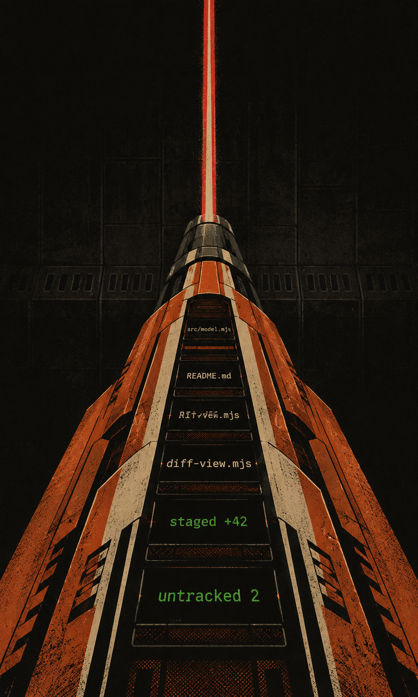
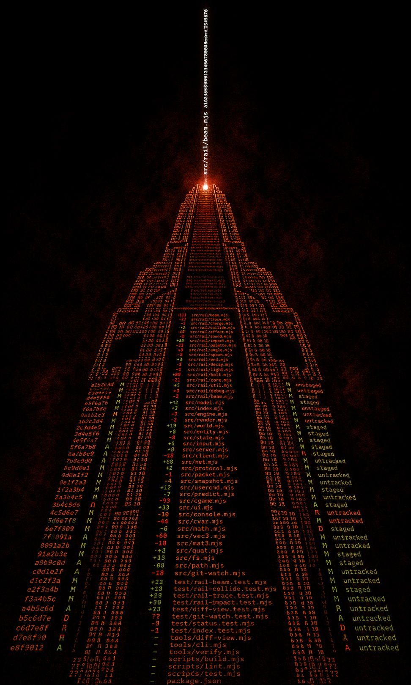
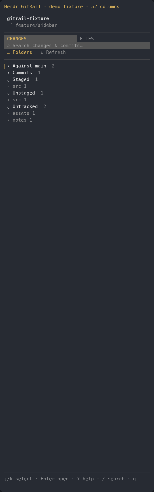

01 / literal translation
Loaded Spine
Files are physical ammunition plates inside the hot orange housing. Closest to the Quake II view and clearest at first glance.
Best for: homepage hero, launch art, splash screenQuake II / first-person view / vertical file rail
The repository becomes the weapon: an orange railgun rises from the bottom of the frame, its recessed spine loaded with files. One selected path leaves the muzzle as a shot.



git-railgun because gitrail was taken, and railguns > just rails.It’s a tiny, read-only Git sidebar with an unnecessarily high-velocity name. The product keeps repository state exact and boring. The identity is allowed to be neither.

Yes, there is actual software under here
GitRail sits beside a Herdr or cmux pane and shows the exact state you’re about to inspect. It does not write, stage, reset, rebase, rewrite history, or accidentally vaporize the worktree.
The first-person vertical read is non-negotiable. The useful question is how literally the files become the weapon.
Files are physical ammunition plates inside the hot orange housing. Closest to the Quake II view and clearest at first glance.
Best for: homepage hero, launch art, splash screenHard screen-print shapes make the weapon feel like a brand asset instead of game concept art. Strongest color and silhouette system.
Best for: docs covers, release posters, socialThe files don’t sit on the gun—they are the gun. A single selected path continues upward as the beam.
Best for: motion, terminal animation, campaign identityThe housing should feel massive at the bottom edge, not like a neat logo floating in space.
Rows get narrower and tighter as they approach the muzzle. Perspective supplies the velocity.
The color blocking does most of the Quake II recognition before any detail is visible.
The active file changes from bone to white-hot; its name can stretch into the beam or target.
Green additions, red deletions, and status counts belong inside the gun instead of around it.
The full first-person composition is the hero. These isolate its orange shell, loaded spine, muzzle, and shot for everyday product use.
Most literal reduced version; still reads vertically at favicon scale.
The data is the weapon; avoids drawing a conventional gun.
The railgun’s barrel becomes the active terminal cursor.
Filename rows converge until HEAD becomes the shot.
A custom GR is split by the accelerator channel.
Git states replace the black mechanical ribs on the housing.
The current gold focus rail evolves into a charged green round.
A commit compressed into a faceted vertical projectile.
Recommended system
Use the Quake II perspective as the expressive device, not everywhere. Everyday UI stays dark and quiet. Rust-orange geometry frames the product; green means active/loaded; red is heat and diff deletion; bone is readable file text.
The files are not decoration on a gun. The files become its body, accelerator, and shot.
It retains the vertical perspective and loaded spine without requiring the full illustrative composition.
Use it when the identity needs to show actual filenames and Git status in a more immediately readable form.
The tool is serious. The name, specs, and occasional railgun flourish can carry the silliness without turning the UI into a game skin.